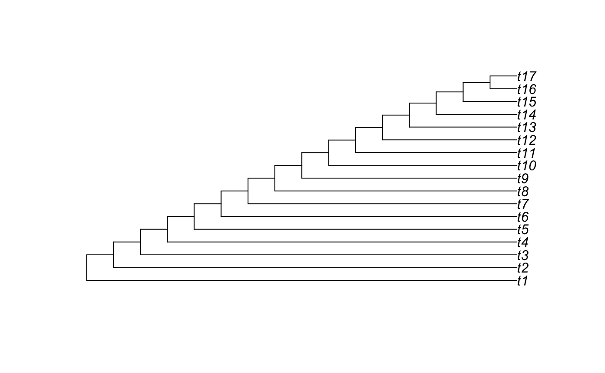
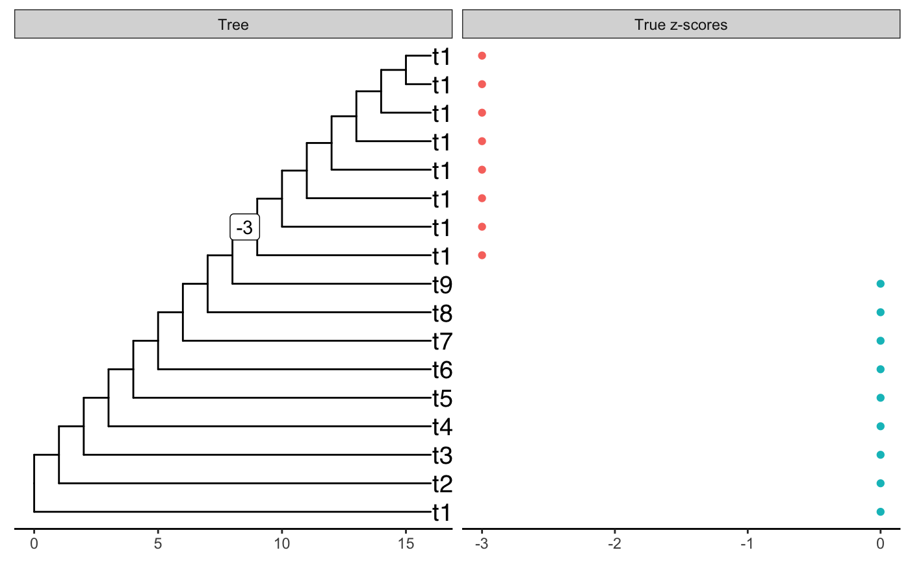
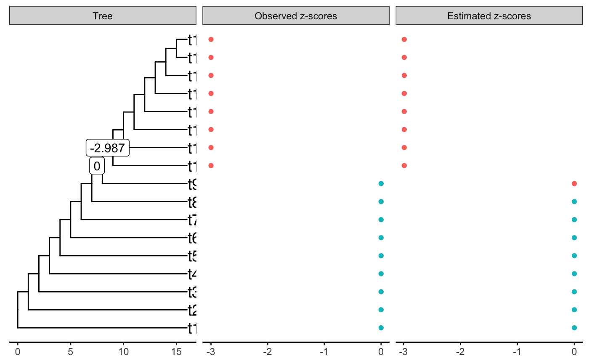
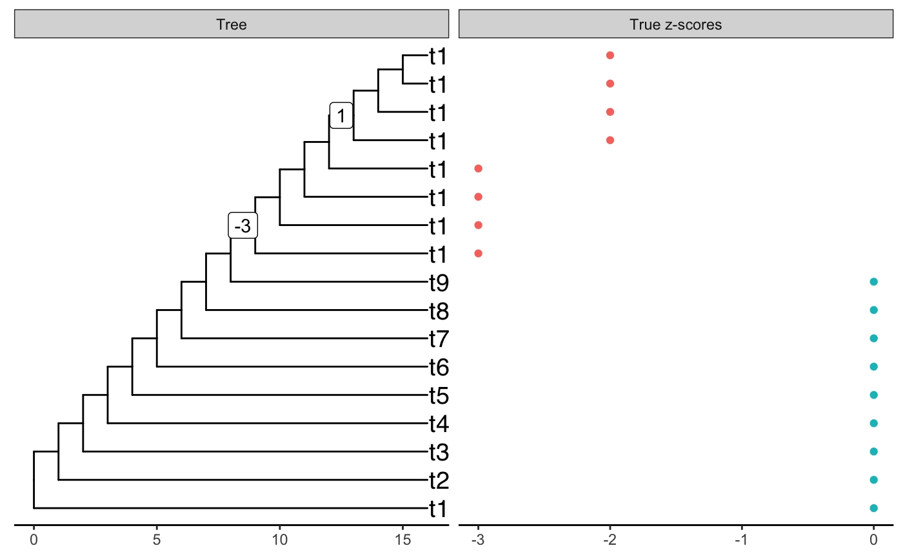
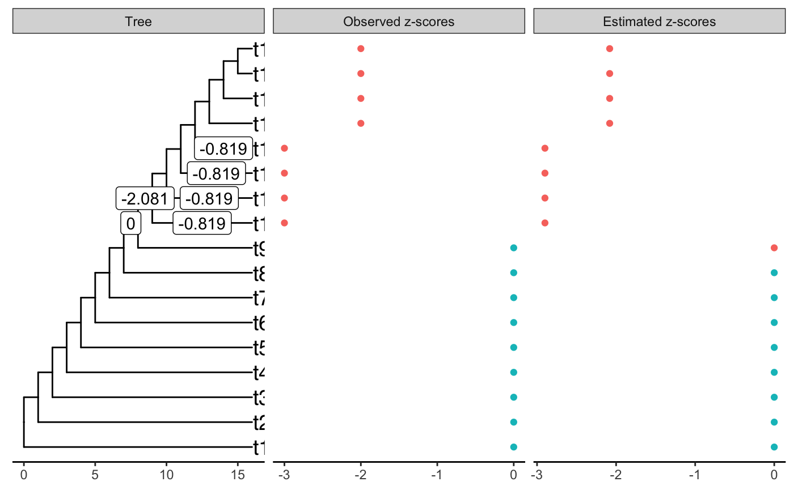
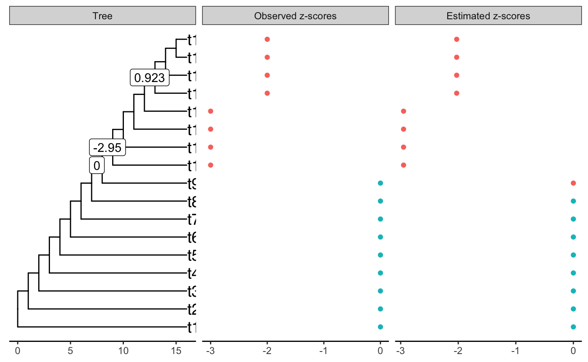
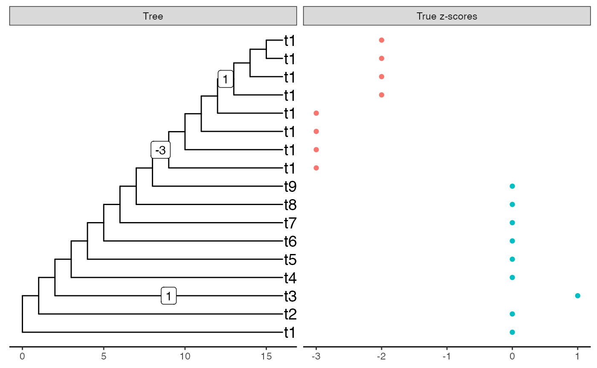
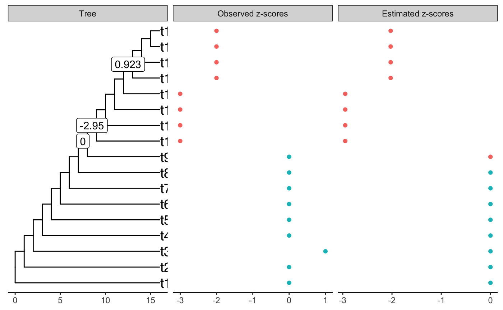
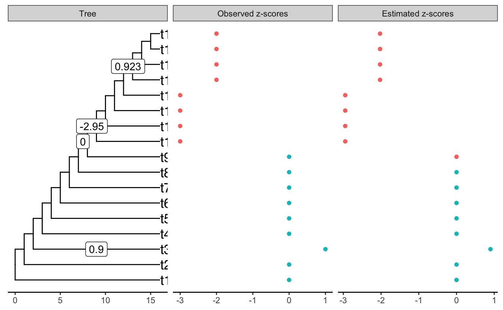

m <- 17
M <- 2 * (m - 1)
tree <- stree(m, type = "left")
edlength <- rep(1, M)
edlength[1:M %% 2 == 1] <- (m-1):1
tree$edge.length <- edlength
mat_incid <- incidence_matrix(tree)
plot(tree)
true_shifts <- rep(0, M)
true_shifts[9 * M / 16] <- -3
true_zscores <- mat_incid %*% true_shifts
plot_shifts(tree, true_shifts, true_scores = true_zscores)
#> Warning: `data_frame()` is deprecated as of tibble 1.1.0.
#> Please use `tibble()` instead.
#> This warning is displayed once every 8 hours.
#> Call `lifecycle::last_warnings()` to see where this warning was generated.
#> Warning: Removed 32 rows containing missing values (geom_label).
estimation1 <- estimate_shifts(rep(0, M), zscores = true_zscores,
tree = tree, alpha = 1, lambda = 0.1,
method = "shooting")
estimation1
#> Tree is binary with 17 leafs and 32 branches
#> Covariance matrix has been estimated from an OU with alpha = 1 and sigma = 1.414
#> ---
#> Optimisation algorithm: shooting
#> Regularization parameter: lambda = 0.1
#> Objective value: 0.299
#> BIC: 48.695
#> pBIC: 66.206
#> ---
#> Estimated shifts: 0 0 0 0 0 0 0 0 0 0 ...
#> 2 shifts have been identified (ie 93.8 % of sparsity)
#> A parsimonious solution would involve 2 shifts
#> ---
#> Observed z-scores: 0 0 0 0 0 0 0 0 0 -3 ...
#> Estimated z-scores: 0 0 0 0 0 0 0 0 0 -2.987 ...
#> 9 z-scores have been shifted (ie 47.1 % of sparsity)
plot(estimation1)
#> Warning: Removed 31 rows containing missing values (geom_label).
true_shifts[13 * M / 16] <- 1
true_zscores <- mat_incid %*% true_shifts
plot_shifts(tree, true_shifts, true_scores = true_zscores)
#> Warning: Removed 31 rows containing missing values (geom_label).
estimation2 <- estimate_shifts(rep(0, M), zscores = true_zscores,
tree = tree, alpha = 1, lambda = 0.1,
method = "shooting")
estimation2
#> Tree is binary with 17 leafs and 32 branches
#> Covariance matrix has been estimated from an OU with alpha = 1 and sigma = 1.414
#> ---
#> Optimisation algorithm: shooting
#> Regularization parameter: lambda = 0.1
#> Objective value: 0.568
#> BIC: 60.06
#> pBIC: 94.697
#> ---
#> Estimated shifts: 0 0 0 0 0 0 0 0 0 0 ...
#> 6 shifts have been identified (ie 81.2 % of sparsity)
#> A parsimonious solution would involve 6 shifts
#> ---
#> Observed z-scores: 0 0 0 0 0 0 0 0 0 -3 ...
#> Estimated z-scores: 0 0 0 0 0 0 0 0 0 -2.9 ...
#> 9 z-scores have been shifted (ie 47.1 % of sparsity)
plot(estimation2)
#> Warning: Removed 27 rows containing missing values (geom_label).
Z-score are well recovered but the solution is absolutely not sparse. We should prioritize ancestral branches before
estimation3 <- estimate_shifts(rep(0, M), zscores = true_zscores,
tree = tree, alpha = 1, lambda = 0.1,
method = "shooting",
constraint_type = "yhat")
estimation3
#> Tree is binary with 17 leafs and 32 branches
#> Covariance matrix has been estimated from an OU with alpha = 1 and sigma = 1.414
#> ---
#> Optimisation algorithm: shooting
#> Regularization parameter: lambda = 0.1
#> Objective value: 0.394
#> BIC: 51.534
#> pBIC: 73.724
#> ---
#> Estimated shifts: 0 0 0 0 0 0 0 0 0 0 ...
#> 3 shifts have been identified (ie 90.6 % of sparsity)
#> A parsimonious solution would involve 3 shifts
#> ---
#> Observed z-scores: 0 0 0 0 0 0 0 0 0 -3 ...
#> Estimated z-scores: 0 0 0 0 0 0 0 0 0 -2.95 ...
#> 9 z-scores have been shifted (ie 47.1 % of sparsity)
plot(estimation3)
#> Warning: Removed 30 rows containing missing values (geom_label).
true_shifts[2 * M / 16 + 1] <- 1
true_zscores <- mat_incid %*% true_shifts
plot_shifts(tree, true_shifts, true_scores = true_zscores)
#> Warning: Removed 30 rows containing missing values (geom_label).
estimation4 <- estimate_shifts(rep(0, M), zscores = true_zscores,
tree = tree, alpha = 1, lambda = 0.1,
method = "shooting",
constraint_type = "yhat")
estimation4
#> Tree is binary with 17 leafs and 32 branches
#> Covariance matrix has been estimated from an OU with alpha = 1 and sigma = 1.414
#> ---
#> Optimisation algorithm: shooting
#> Regularization parameter: lambda = 0.1
#> Objective value: 0.894
#> BIC: 52.034
#> pBIC: 74.552
#> ---
#> Estimated shifts: 0 0 0 0 0 0 0 0 0 0 ...
#> 3 shifts have been identified (ie 90.6 % of sparsity)
#> A parsimonious solution would involve 3 shifts
#> ---
#> Observed z-scores: 0 0 1 0 0 0 0 0 0 -3 ...
#> Estimated z-scores: 0 0 0 0 0 0 0 0 0 -2.95 ...
#> 9 z-scores have been shifted (ie 47.1 % of sparsity)
plot(estimation4)
#> Warning: Removed 30 rows containing missing values (geom_label).
estimation5 <- estimate_shifts(rep(0, M), zscores = true_zscores,
tree = tree, alpha = 1, lambda = 0.1,
method = "shooting",
constraint_type = "none")
estimation5
#> Tree is binary with 17 leafs and 32 branches
#> Covariance matrix has been estimated from an OU with alpha = 1 and sigma = 1.414
#> ---
#> Optimisation algorithm: shooting
#> Regularization parameter: lambda = 0.1
#> Objective value: 0.489
#> BIC: 54.372
#> pBIC: 81.611
#> ---
#> Estimated shifts: 0 0 0 0 0.9 0 0 0 0 0 ...
#> 4 shifts have been identified (ie 87.5 % of sparsity)
#> A parsimonious solution would involve 4 shifts
#> ---
#> Observed z-scores: 0 0 1 0 0 0 0 0 0 -3 ...
#> Estimated z-scores: 0 0 0.9 0 0 0 0 0 0 -2.95 ...
#> 10 z-scores have been shifted (ie 41.2 % of sparsity)
plot(estimation5)
#> Warning: Removed 29 rows containing missing values (geom_label).